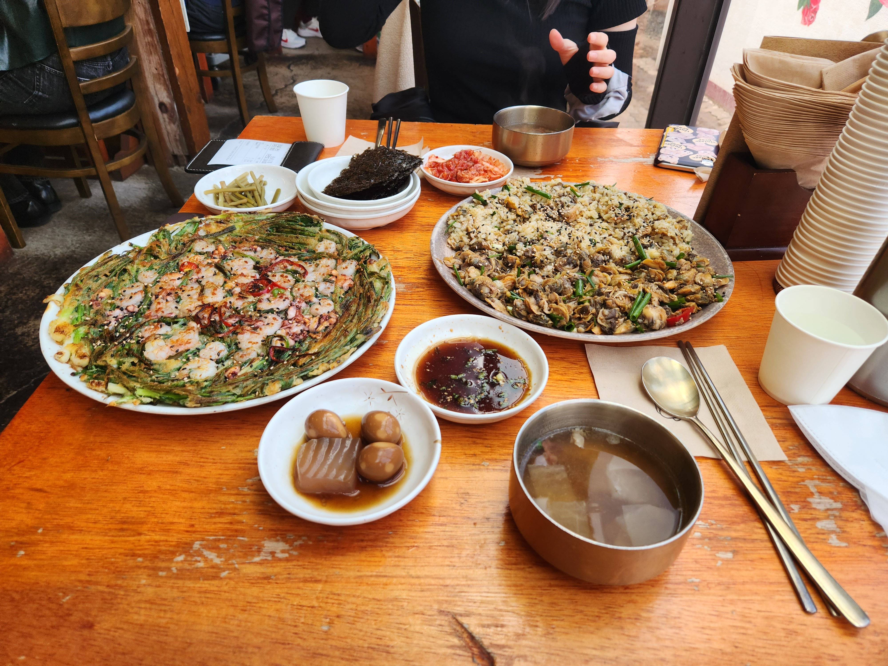
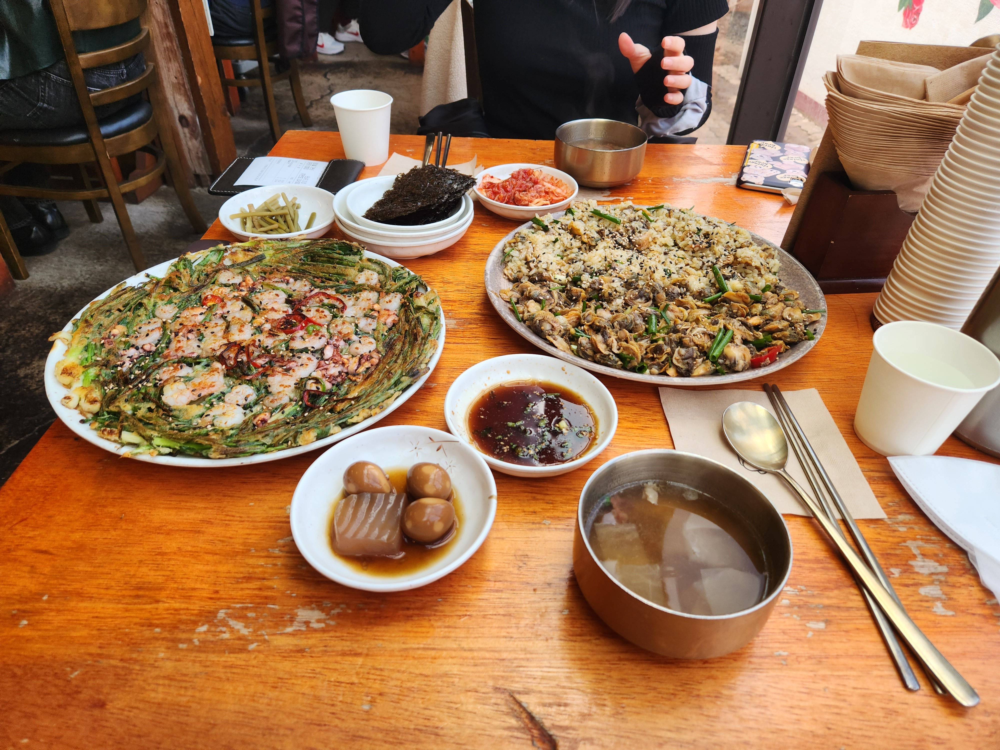
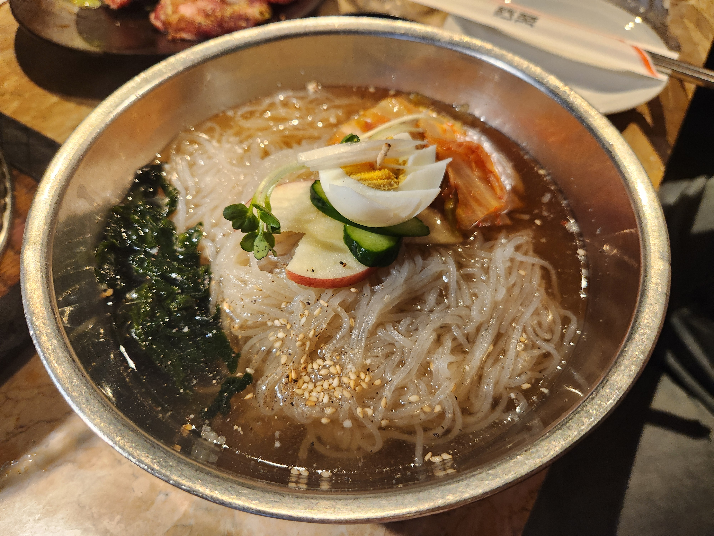
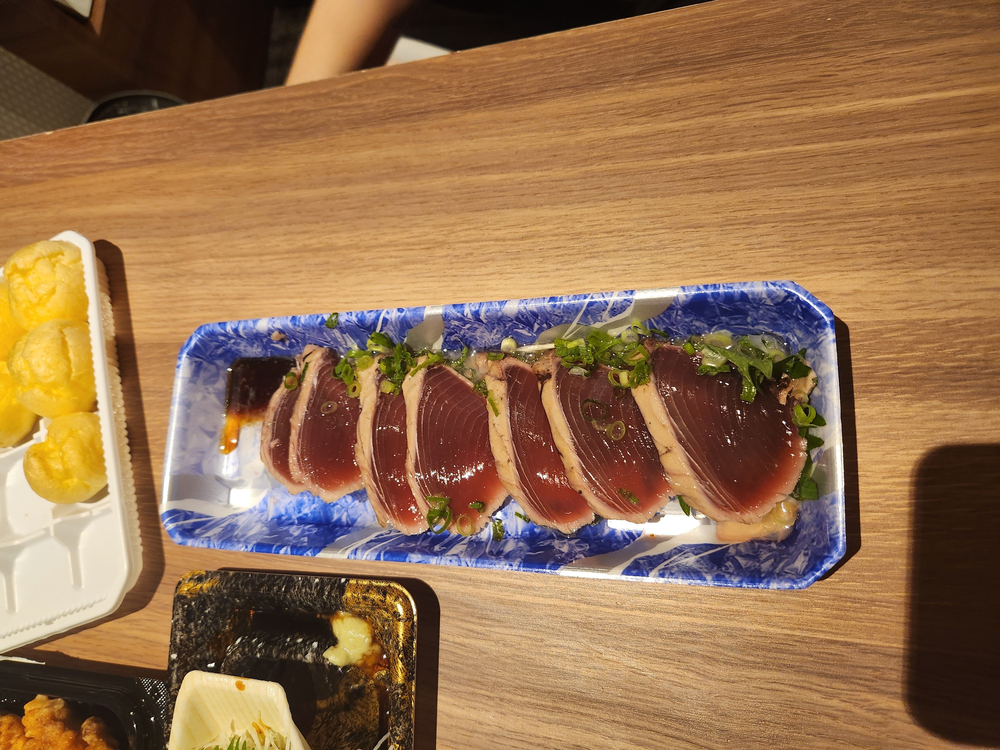
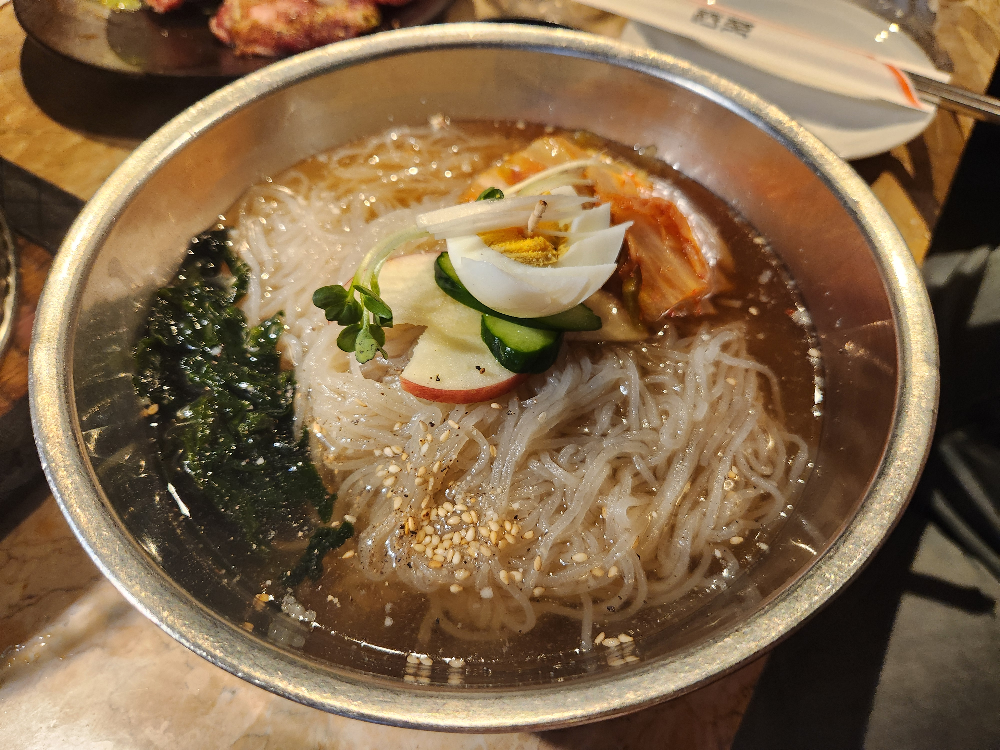
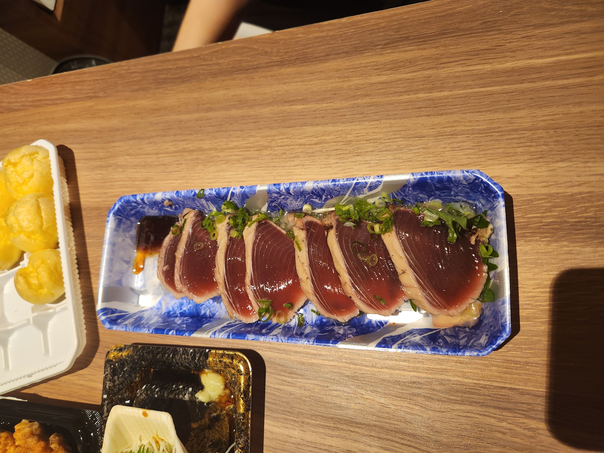

경주
지역 특징 : 신라의 역사, 문화를 볼 수 있다
음식 : 딱히 대표음식 그런 건 없고 그냥 색다른 요리 맛집들이 많다
십원빵 맛없으니 절때 사먹지 말것
놀만한 곳 : 경주월드, 황리단길
 



부산
지역 특징 : 바닷가 근처라 뷰가 좋다.
볼 거리가 너무 띄엄띄엄 있어서 차 없으면 불편하다
음식 : 돼지국밥은 어딜가도 평타 이상은 하는 것 같다.
음식 간이 삼삼하다
물떡 너무 맛없다
놀만한 곳 : 부산 롯데월드, 해운대 등등 부산은 볼 곳이 많다
요트도 재미있다, 겨울에 타면 얼어죽을 것 같다


일본
지역 특징 : 회가 엄청싸다, 도쿄 쪽엔 문화 관광할 곳이 별로 없다
쇼핑하러 가는곳이다
문화 관광은 오사카로 가야한다
지하철 구글 맵 없으면 탈 수 없다
음식 : 라멘, 튀김, 우동, 회, 초밥 싸고 맛있다
음식 간이 짭짤하다
일본에 있는 한식당 가면 입맛 버린다
놀만한 곳 : 디즈니랜드, 하라주쿠, 시부야 쇼핑, 이케부쿠로, 하코네 등등
갈곳은 많지만 돈이 없다

 


